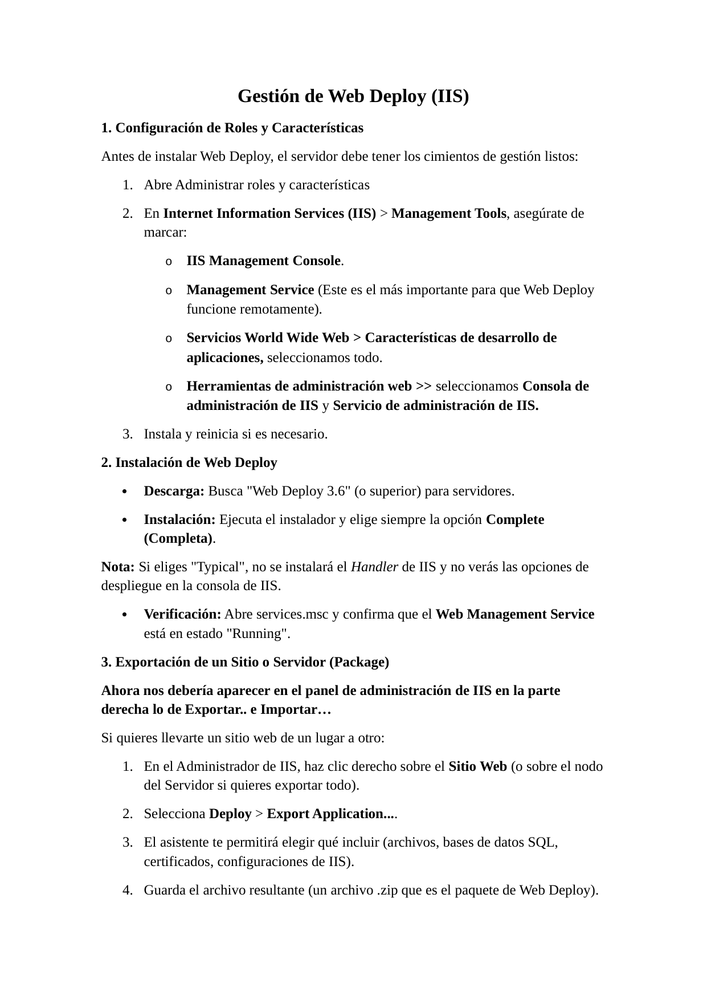

Entorno
| Sistema | Windows Server 2022 |
|---|---|
| Servidor web | IIS |
| Herramienta | Web Deploy 3.6 o superior |
| Servicios | IIS Management Service / Web Management Service |
| Tipo de práctica | Laboratorio de administración |
Objetivos
- Preparar IIS con consola de administración y Management Service.
- Instalar Web Deploy en modo Complete.
- Verificar Web Management Service en estado Running.
- Exportar un sitio o aplicación como paquete ZIP.
- Importar un paquete en un servidor o sitio de destino.
Procedimiento resumido
Roles y características
Se habilitan IIS Management Console, Management Service y características de desarrollo de aplicaciones.
Instalación
Se instala Web Deploy en modo Complete para incluir el handler de IIS.
Validación
Se comprueba en services.msc que Web Management Service está Running.
Exportación
Desde IIS Manager se usa Deploy > Export Application para generar un paquete ZIP.
Importación
En el destino se usa Deploy > Import Application para cargar el ZIP y revisar configuración.
Comandos relevantes
services.msc
Verificacion
- El panel de IIS muestra opciones Deploy > Export Application e Import Application.
- El servicio Web Management Service está Running.
- El paquete ZIP generado puede importarse en el destino.
Buenas practicas
- No habilitar administración remota sin políticas de acceso.
- Usar cuentas dedicadas para despliegue.
- Revisar cadenas de conexión antes de importar.
- Guardar backups antes de sobrescribir sitios.
Evidencias visuales
Capturas del laboratorio renderizadas y preparadas para documentacion tecnica.
01 captura pagina 01

02 captura pagina 02
Conclusiones
El laboratorio queda documentado como evidencia de configuracion, administracion y validacion de servicios web en entorno controlado.